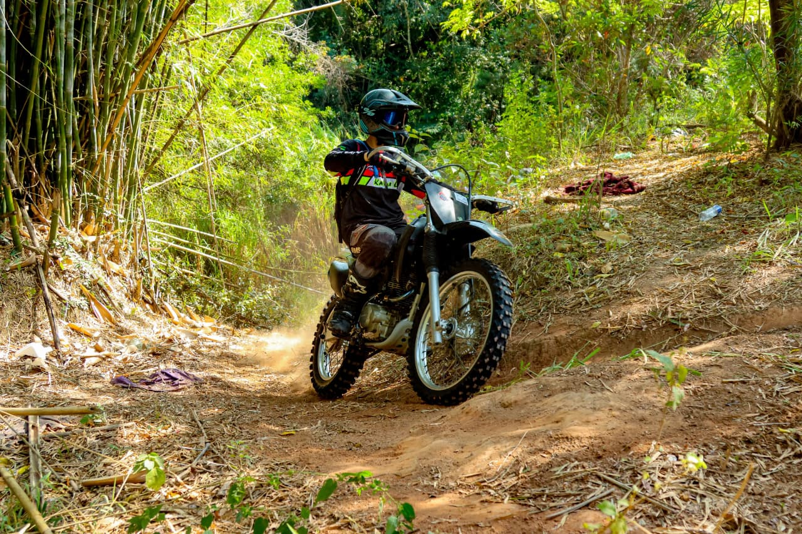
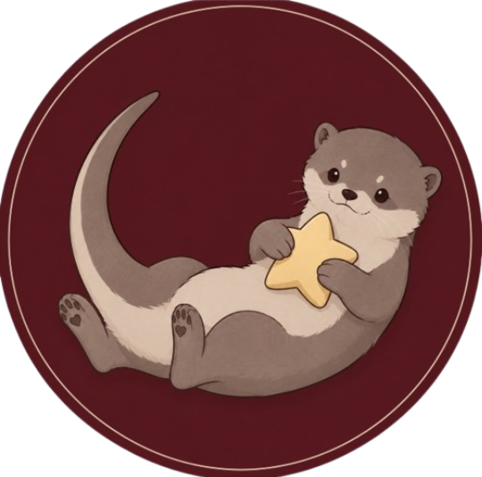
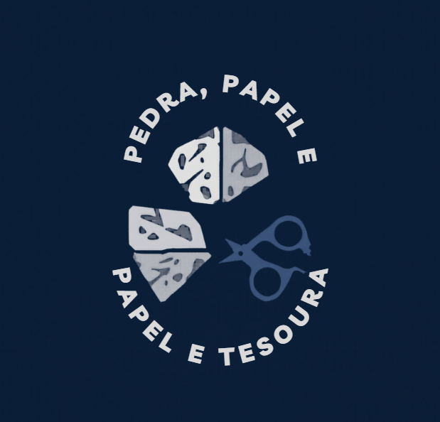
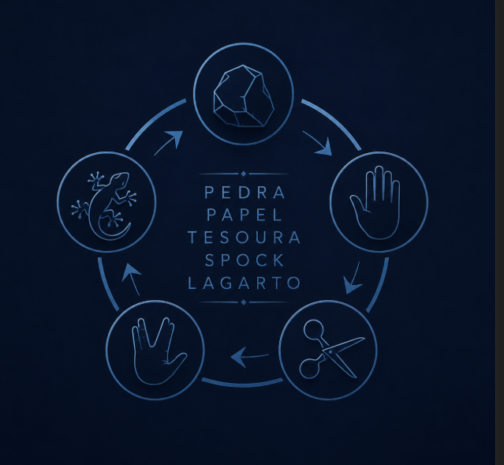

Sobre Mim
Olá, me chamo Murilo e tenho 17 anos, sou uma pessoa que gosta muito de motos, carros, bikes e várias outras coisas que envolvem mato, terra e alguma coisa mais radical. Minha vivência até aqui me proporcionou momentos e aprendizados que jamais esquecerei.
Minha maior paixão no mundo automotivo são as caminhonetes, gosto tanto das mais antigas quanto das mais novas, e na parte das motocicletas, as motos de trilha ganham meu coração.
Também gosto muito de animais, em princípio os cavalos, que desde quando eu tinha 10 anos amo cuidar deles.
Formação
- Curso de Desenvolvimento de Sistemas - Senai SESI (2025 - 2026)
- Curso de HardEnduro - Rigor Rico (2025)
- Curso de Química - Instituto Federal de Educação, Ciência e Tecnologia (2025)
Projetos

Lontrinos
O Lontrinos é um projeto Full Stack desenvolvido como TCC do curso de Desenvolvimento de Sistemas - SENAI. A proposta é criar uma comunidade acolhedora de leitura, onde usuários podem descobrir livros, publicar avaliações e resenhas, trocar ideias em chat em tempo real e ter acesso a uma área exclusiva de clube do livro e lojinha autoral.

Cafeteria Aroma
A Cafeteria Aroma nasceu da paixão por cafés especiais e pelo desejo de oferecer um ambiente aconchegante para amigos, famílias e amantes de café.

Pedra - Papel - Tesoura
Um jogo clássico reimaginado com uma abordagem moderna e interativa.

Pedra - Papel - Tesoura -- Lagartospock
Uma versão expandida do jogo clássico, incluindo novas opções e mecânicas de jogo.